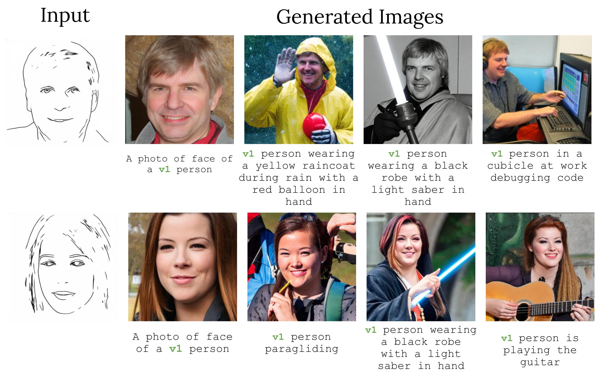

Click to send your pal on a virtual vacation.
Recently, we have seen a surge of personalization methods for text-to-image (T2I) diffusion models to learn a concept using a few images. Existing approaches, when used for face personalization, suffer to achieve convincing inversion with identity preservation and rely on semantic text-based editing of the generated face. However, a more fine-grained control is desired for facial attribute editing, which is challenging to achieve solely with text prompts. In contrast, StyleGAN models learn a rich face prior and enable smooth control towards fine-grained attribute editing by latent manipulation. This work uses the disentangled W+ space of StyleGANs to condition the T2I model. This approach allows us to precisely manipulate facial attributes, such as smoothly introducing a smile, while preserving the existing coarse text-based control inherent in T2I models. To enable conditioning of the T2I model on the W+ space, we train a latent mapper to translate latent codes from W+ to the token embedding space of the T2I model. The proposed approach excels in the precise inversion of face images with attribute preservation and facilitates continuous control for fine-grained attribute editing. Furthermore, our approach can be readily extended to generate compositions involving multiple individuals. We perform extensive experiments to validate our method for face personalization and fine-grained attribute editing.
Given a single portrait image, we extract its w latent representation from encoder EGAN. The latent w along with diffusion timestep t are passed through the latent adaptor M to generate a pair of time-dependent token embeddings (vt1, vt2) representing the input subject. Finally, the token embeddings are combined with arbitrary prompts to generate customized images.
We map the given input image into w latent code, which is shifted by a global linear attribute edit direction to obtain edited latent code w*. The edited latent code w* is then passed through the T2I model to obtain fine-grained attribute edits. The scalar edit strength parameter β can be changed to obtain continuous attribute control. Our method performs disentangled edits for various attributes while preserving identity and generalizing to in-the-wild faces, styles, and multiple-persons. Identity Interpolation. We can perform smooth interpolation between identities by interpolating between the corresponding w codes.
We run multiple parallel diffusion processes, one for each subject and one for the background and fuse them using an instance segmentation mask at each denoising step. The instance mask can be user-provided or obtained by segmenting a generated image of two subjects by the same T2I model. Note that the diffusion process for each subject is passed through its corresponding fine-tuned model, which results in excellent identity preservation.
We can perform continuous edits for two attributes simultaneously by taking a linear combination of attribute edit directions. Observe the smooth and disentangled edit transformations for age and beard attributes while preserving identity.
Face restoration: The disentangled 𝕊+ latent space serves as an excellent face prior in StyleGANs. Leveraging this, we perform face restoration by projecting a corrupted face image into the 𝕊+ latent space using the StyleGAN encoder to condition the T2I model. The resultant generated images look realistic and can be embedded and edited using T2I capabilities. Personalization of such corrupted images is challenging as the model could easily overfit the given single-face image.
Sketch-to-image: We use pSp encoder trained to map edge images to the 𝕊+ latent space for sketch to image generation. The obtained 𝕊 latent code can then be used to condition the T2I model for real image generation.
We perform attribute editing by using the edit directions obtained from InterfaceGAN. The edit directions generalize well in T2I models, indicating easy integration of any off-the-shelf StyleGAN editing method in our framework.
The authors would like to thank Grace Luo, Lisa Dunlap, Konpat Preechakul, Sheng-Yu Wang, Stephanie Fu, Or Patashnik, Daniel Cohen-Or, and Sergey Tulyakov for helpful discussions. AD is supported by the US Department of Energy Computational Science Graduate Fellowship. Part of the work was completed by AD as an intern with Snap Inc. YG is funded by the Google Fellowship. Additional funding came from ONR MURI.
@misc{dravid2024interpreting,
title={Interpreting the Weight Space of Customized Diffusion Models},
author={Amil Dravid and Yossi Gandelsman and Kuan-Chieh Wang and Rameen Abdal and Gordon Wetzstein and Alexei A. Efros and Kfir Aberman},
year={2024},
eprint={2406.09413},
}